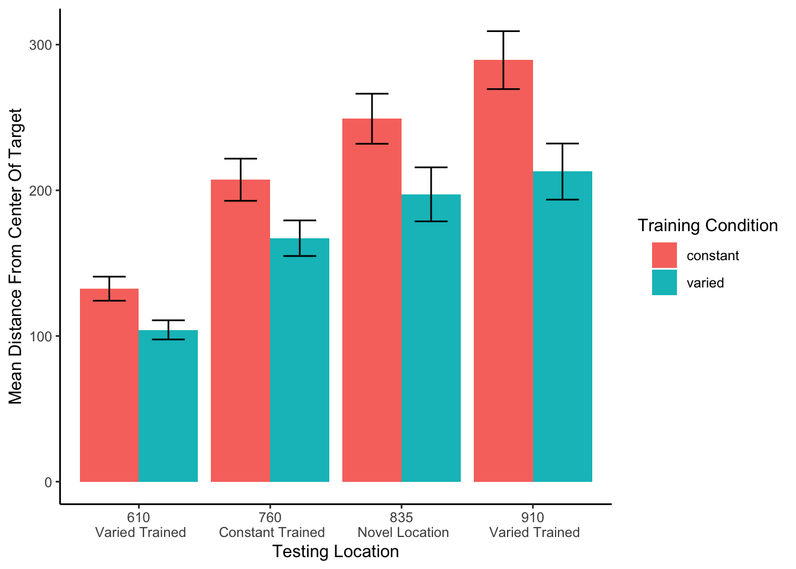
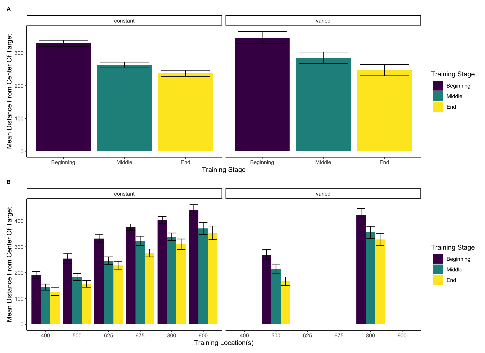
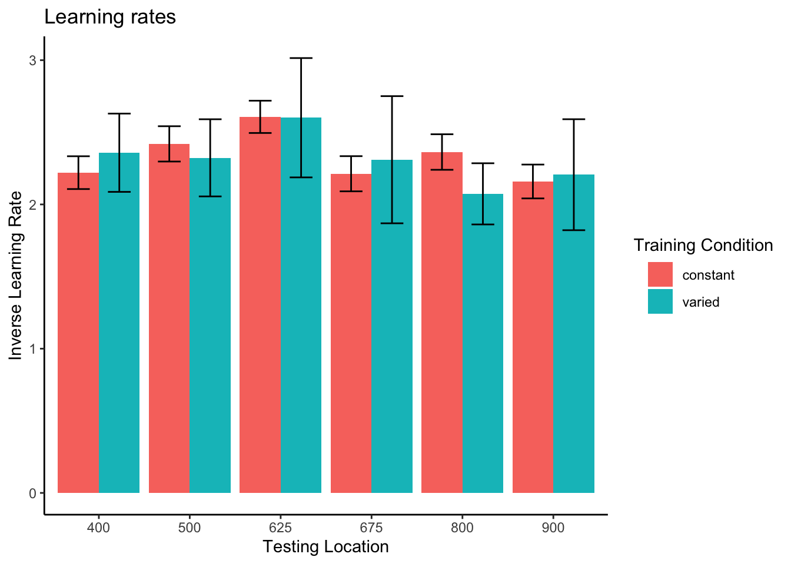
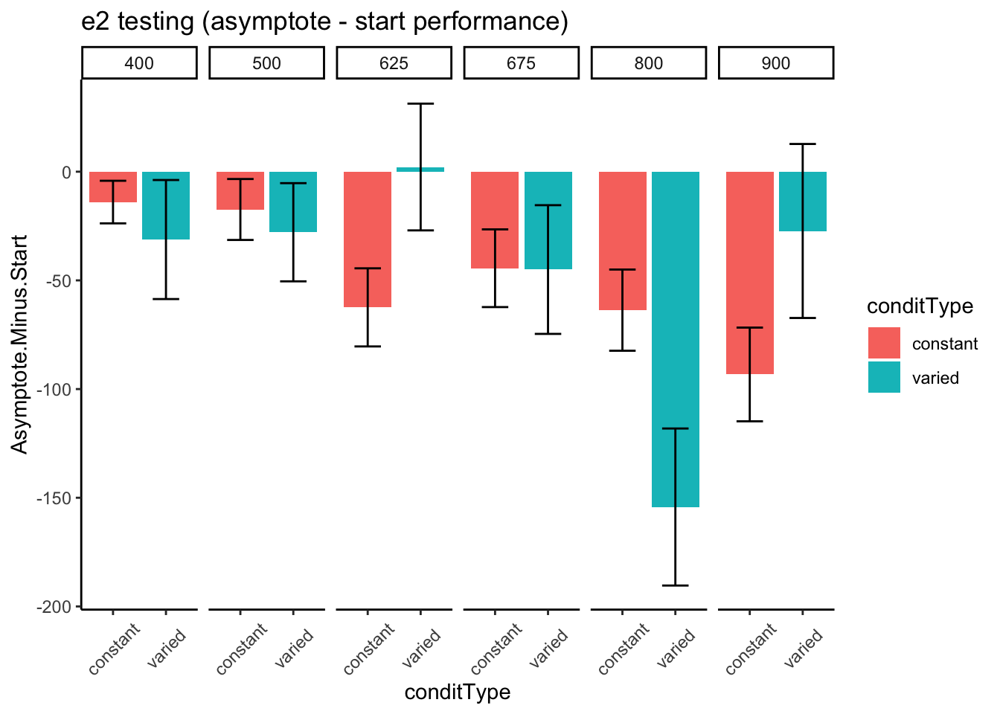
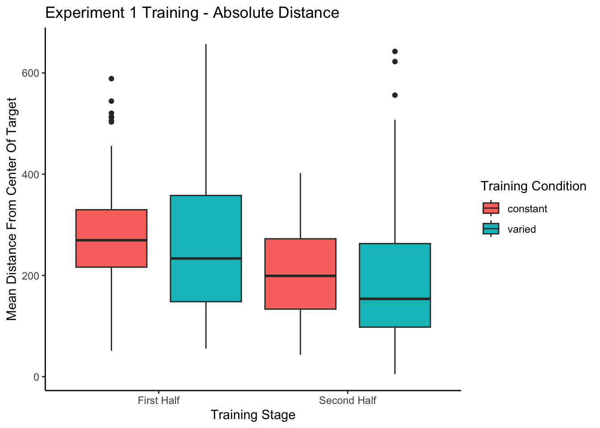
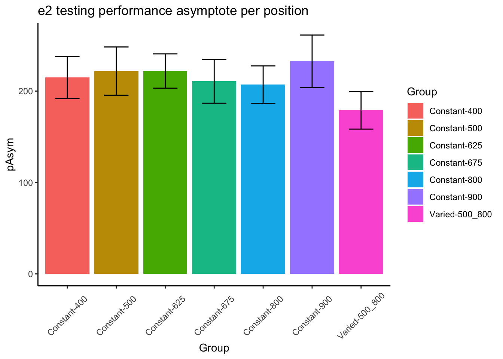

IGAS Project
An instance-based model account of the benefits of varied practice in visuomotor skill
pdf of the journal article
Link to online version of journal article
Abstract
Exposing learners to variability during training has been demonstrated to improve performance in subsequent transfer testing. Such variability benefits are often accounted for by assuming that learners are developing some general task schema or structure. However much of this research has neglected to account for differences in similarity between varied and constant training conditions. In a between-groups manipulation, we trained participants on a simple projectile launching task, with either varied or constant conditions. We replicate previous findings showing a transfer advantage of varied over constant training. Furthermore, we show that a standard similarity model is insufficient to account for the benefits of variation, but, if the model is adjusted to assume that varied learners are tuned towards a broader generalization gradient, then a similarity-based model is sufficient to explain the observed benefits of variation. Our results therefore suggest that some variability benefits can be accommodated within instance-based models without positing the learning of some schemata or structure.
Introduction
Similarity and instance-based approaches to transfer of learning
Notions of similarity have long played a central role in many prominent models of generalization of learning, as well as in the longstanding theoretical issue of whether learners abstract an aggregate, summary representation, or if they simply store individual instances. Early models of learning often assumed that discrete experiences with some task or category were not stored individually in memory, but instead promoted the formation of a summary representation, often referred to as a prototype or schema, and that exposure to novel examples would then prompt the retrieval of whichever preexisting prototype was most similar (Posner & Keele, 1968). Prototype models were later challenged by the success of instance-based or exemplar models – which were shown to provide an account of generalization as good or better than prototype models, with the advantage of not assuming the explicit construction of an internal prototype (Estes, 1994; Hintzman, 1984; Medin & Schaffer, 1978; Nosofsky, 1986). Instance-based models assume that learners encode each experience with a task as a separate instance/exemplar/trace, and that each encoded trace is in turn compared against novel stimuli. As the number of stored instances increases, so does the likelihood that some previously stored instance will be retrieved to aid in the performance of a novel task. Stored instances are retrieved in the context of novel stimuli or tasks if they are sufficiently similar, thus suggesting that the process of computing similarity is of central importance to generalization.
Similarity, defined in this literature as a function of psychological distance between instances or categories, has provided a successful account of generalization across numerous tasks and domains. In an influential study demonstrating an ordinal similarity effect, experimenters employed a numerosity judgment task in which participants quickly report the number of dots flashed on a screen. Performance (in terms of response times to new patterns) on novel dot configurations varied as an inverse function of their similarity to previously trained dot configurations Palmeri (1997). That is, performance was better on novel configurations moderately similar to trained configurations than to configurations with low-similarity, and also better on low-similarity configurations than to even less similar, unrelated configurations. Instance-based approaches have had some success accounting for performance in certain sub-domains of motor learning (Cohen & Rosenbaum, 2004; Crump & Logan, 2010; Meigh et al., 2018; Poldrack et al., 1999; Wifall et al., 2017). Crump & Logan (2010) trained participants to type words on an unfamiliar keyboard, while constraining the letters composing the training words to a pre-specified letter set. Following training, typing speed was tested on previously experienced words composed of previously experienced letters; novel words composed of letters from the trained letter set; and novel words composed of letters from an untrained letter set. Consistent with an instance-based account, transfer performance was graded such that participants were fastest at typing the words they had previously trained on, followed by novel words composed of letters they had trained on, and slowest performance for new words composed of untrained letters.
Issues with Previous Research
Although the benefits of training variation in visuomotor skill learning have been observed many times, null findings have also been repeatedly found, leading some researchers to question the veracity of the variability of practice hypothesis (Newell, 2003; Van Rossum, 1990). Critics have also pointed out that investigations of the effects of training variability, of the sort described above, often fail to control for the effect of similarity between training and testing conditions. For training tasks in which participants have numerous degrees of freedom (e.g. projectile throwing tasks where participants control the x and y velocity of the projectile), varied groups are likely to experience a wider range of the task space over the course of their training (e.g. more unique combinations of x and y velocities). Experimenters may attempt to account for this possibility by ensuring that the training location(s) of the varied and constant groups are an equal distance away from the eventual transfer locations, such that their training throws are, on average, equally similar to throws that would lead to good performance at the transfer locations. However, even this level of experimental control may still be insufficient to rule out the effect of similarity on transfer. Given that psychological similarity is typically best described as either a Gaussian or exponentially decaying function of psychological distance (Ennis et al., 1988; Ghahramani et al., 1996; Logan, 1988; Nosofsky, 1992; Shepard, 1987; Thoroughman & Taylor, 2005), it is plausible that a subset of the most similar training instances could have a disproportionate impact on generalization to transfer conditions, even if the average distance between training and transfer conditions is identical between groups. Figure 1 demonstrates the consequences of a generalization gradient that drops off as a Gaussian function of distance from training, as compared to a linear drop-off.
In addition to largely overlooking the potential for non-linear generalization to confound interpretations of training manipulations, the visuomotor skill learning literature also rarely considers alternatives to schema representations (Chamberlin & Magill, 1992b). Although schema-theory remains influential within certain literatures, instance or exemplar-based models have accounted for human behavior across myriad domains (Jamieson et al., 2022; Logan, 2002). As mentioned above, instance based accounts have been shown to perform well on a variety of different tasks with motoric components (Crump & Logan, 2010; Gandolfo et al., 1996; Meigh et al., 2018; Rosenbaum et al., 1995; van Dam & Ernst, 2015). However, such accounts have received little attention within the subdomain of visuomotor skill learning focused on the benefits of varied training.
The present work examines whether the commonly observed benefits of varied training can be accounted for by a theoretrically motivated measure of the similarity between training throws and the testing solution space. We first attempt to replicate previous work finding an advantage of varied training over constant training in a projectile launching task. We then examine the extent to which this advantage can be explained by an instance-based similarity model.
Experiment 1
Methods
Sample Size Estimation
To obtain an independent estimate of effect size, we identified previous investigations which included between-subjects contrasts of varied and constant conditions following training on an accuracy based projectile launching task (Chua et al., 2019; Goodwin et al., 1998; Kerr & Booth, 1978; Wulf, 1991). We then averaged effects across these studies, yielding a Cohen’s f =.43. The GPower 3.1 software package (Faul et al., 2009) was then used to determine that a power of 80% requires a sample size of at least 23 participants per condition. All experiments reported in the present manuscript exceed this minimum number of participants per condition.
Participants
Participants were recruited from an undergraduate population that is 63% female and consists almost entirely of individuals aged 18 to 22 years. A total of 110 Indiana University psychology students participated in Experiment 1. We subsequently excluded 34 participants poor performance at one of the dependent measures of the task (2.5-3 standard deviations worse than the median subject at the task) or for displaying a pattern of responses that was clearly indicative of a lack of engagement with the task (e.g. simply dropping the ball on each trial rather than throwing it at the target), or for reporting that they completed the experiment on a phone or tablet device, despite the instructions not to use one of these devices. A total of 74 participants were retained for the final analyses, 35 in the varied group and 39 in the constant group.
Task
The experimental task was programmed in JavaScript, using packages from the Phaser physics engine (https://phaser.io) and the jsPsych library (de Leeuw, 2015). The stimuli, presented on a black background, consisted of a circular blue ball - controlled by the participant via the mouse or trackpad cursor; a rectangular green target; a red rectangular barrier located between the ball and the target; and an orange square within which the participant could control the ball before releasing it in a throw towards the target. Because the task was administered online, the absolute distance between stimuli could vary depending on the size of the computer monitor being used, but the relative distance between the stimuli was held constant. Likewise, the distance between the center of the target and the training and testing locations was scaled such that relative distances were preserved regardless of screen size. For the sake of brevity, subsequent mentions of this relative distance between stimuli, or the position where the ball landed in relation to the center of the target, will be referred to simply as distance. Figure 2 displays the layout of the task, as it would appear to a participant at the start of a trial, with the ball appearing in the center of the orange square. Using a mouse or trackpad, participants click down on the ball to take control of the ball, connecting the movement of the ball to the movement of the cursor. Participants can then “wind up” the ball by dragging it (within the confines of the orange square) and then launch the ball by releasing the cursor. If the ball does not land on the target, participants are presented with feedback in red text at the top right of the screen, specifying how many scaled units away the ball was from the center of the target. If the ball was thrown outside of the boundary of the screen participants are given feedback as to how far away from the target center the ball would have been if it had continued its trajectory. If the ball strikes the barrier (from the side or by landing on top), feedback is presented telling participants to avoid hitting the barrier. If participants drag the ball outside of the orange square before releasing it, the trial terminates, and they are reminded to release the ball within the orange square. If the ball lands on the target, feedback is presented in green text, confirming that the target was hit, and presenting additional feedback on how many units away the ball was from the exact center of the target.
Link to abbreviated example of task.

Procedure
Participants first electronically consented to participate, and then read instructions for the task which explained how to control the ball, and the goal of throwing the ball as close to the center of the target as possible. The training phase was split into 10 blocks of 20 trials, for a total of 200 training trials. Participants in the constant condition trained exclusively from a single location (760 scaled units from the target center). Participants in the varied condition trained from two locations (610 and 910 scaled units from the target center), encountering each location 100 times. The sequence of throwing locations was pseudo-random for the varied group, with the constraint that within every block of 20 training throws both training locations would occur 10 times. Participants in both conditions also received intermittent testing trials after every 20 training trials. Intermittent testing trials provided no feedback of any kind. The ball would disappear from view as soon as it left the orange square, and participants were prompted to start the next trial without receiving any information about the accuracy of the throw. Each intermittent testing stage consisted of two trials from each of the three training positions (i.e. all participants executed two trials each from Positions 610, 760, and 910 during each of the 10 intermittent testing stages). Following training, all participants completed a final testing phase from four positions: 1) their training location, 2) the training location(s) of the other group, 3) a location novel to both groups. The testing phase consisted of 15 trials from each of the four locations, presented in a randomized order. All trials in the final testing phase included feedback. After finishing the final testing portion of the study, participants were queried as to whether they completed the study using a mouse, a trackpad, or some other device (this information was used in the exclusion process described above). Finally, participants were debriefed as to the hypotheses and manipulation of the study.
Results
Data Processing and Statistical Packages
To prepare the data, we removed trials that were not easily interpretable as performance indicators in our task. Removed trials included: 1) those in which participants dragged the ball outside of the orange starting box without releasing it, 2) trials in which participants clicked on the ball, and then immediately released it, causing the ball to drop straight down, 3) outlier trials in which the ball was thrown more than 2.5 standard deviations further than the average throw (calculated separately for each throwing position), and 4) trials in which the ball struck the barrier. The primary measure of performance used in all analyses was the absolute distance away from the center of the target. The absolute distance was calculated on every trial, and then averaged within each subject to yield a single performance score, for each position. A consistent pattern across training and testing phases in both experiments was for participants to perform worse from throwing positions further away from the target – a pattern which we refer to as the difficulty of the positions. However, there were no interactions between throwing position and training conditions, allowing us to collapse across positions in cases where contrasts for specific positions were not of interest. All data processing and statistical analyses were performed in R version 4.32 (Team, 2020). ANOVAs for group comparisons were performed using the rstatix package (Kassambara, 2021).
Training Phase
Figure 3 below shows aggregate training performance binned into three stages representing the beginning, middle, and end of the training phase. Because the two conditions trained from target distances that were not equally difficult, it was not possible to directly compare performance between conditions in the training phase. Our focus for the training data analysis was instead to establish that participants did improve their performance over the course of training, and to examine whether there was any interaction between training stage and condition. Descriptive statistics for the intermittent testing phase are provided in the supplementary materials.
We performed an ANOVA comparison with stage as a within-group factor and condition as between-group factor. The analysis revealed a significant effect of training stage F(2,142)=62.4, p<.001, \(\eta^{2}_G\) = .17, such that performance improved over the course of training. There was no significant effect of condition F(1,71)=1.42, p=.24, \(\eta^{2}_G\) = .02, and no significant interaction between condition and training stage, F(2,142)=.10, p=.91, \(\eta^{2}_G\) < .01.

Testing Phase
In Experiment 1, a single constant-trained group was compared against a single varied-trained group. At the transfer phase, all participants were tested from 3 positions: 1) the positions(s) from their own training, 2) the training position(s) of the other group, and 3) a position novel to both groups. Overall, group performance was compared with a mixed type III ANOVA, with condition (varied vs. constant) as a between-subject factor and throwing location as a within-subject variable. The effect of throwing position was strong, F(3,213) = 56.12, p<.001, η2G = .23. The effect of training condition was significant F(1,71)=8.19, p<.01, η2G = .07. There was no significant interaction between group and position, F(3,213)=1.81, p=.15, η2G = .01.

| Position | Constant | Varied |
|---|---|---|
| 610 | 132.48(50.85) | 104.2(38.92) |
| 760 | 207.26(89.19) | 167.12(72.29) |
| 835 | 249.13(105.92) | 197.22(109.71) |
| 910 | 289.36(122.48) | 212.86(113.93) |
Discussion
In Experiment 1, we found that varied training resulted in superior testing performance than constant training, from both a position novel to both groups, and from the position at which the constant group was trained, which was novel to the varied condition. The superiority of varied training over constant training even at the constant training position is of particular note, given that testing at this position should have been highly similar for participants in the constant condition. It should also be noted, though, that testing at the constant trained position is not exactly identical to training from that position, given that the context of testing is different in several ways from that of training, such as the testing trials from the different positions being intermixed, as well as a simple change in context as a function of time. Such contextual differences will be further considered in the General Discussion.
In addition to the variation of throwing position during training, the participants in the varied condition of Experiment 1 also received training practice from the closest/easiest position, as well as from the furthest/most difficult position that would later be encountered by all participants during testing. The varied condition also had the potential advantage of interpolating both of the novel positions from which they would later be tested. Experiment 2 thus sought to address these issues by comparing a varied condition to multiple constant conditions.
Experiment 2
In Experiment 2, we sought to replicate our findings from Experiment 1 with a new sample of participants, while also addressing the possibility of the pattern of results in Experiment 1 being explained by some idiosyncrasy of the particular training location of the constant group relative to the varied group. To this end, Experiment 2 employed the same basic procedure as Experiment 1, but was designed with six separate constant groups each trained from one of six different locations (400, 500, 625, 675, 800, or 900), and a varied group trained from two locations (500 and 800). Participants in all seven groups were then tested from each of the 6 unique positions.
Methods
Participants
A total of 306 Indiana University psychology students participated in Experiment 2, which was also conducted online. As was the case in Experiment 1, the undergraduate population from which we recruited participants was 63% female and primarily composed of 18–22-year-old individuals. Using the same procedure as Experiment 1, we excluded 98 participants for exceptionally poor performance at one of the dependent measures of the task, or for displaying a pattern of responses indicative of a lack of engagement with the task. A total of 208 participants were included in the final analyses with 31 in the varied group and 32, 28, 37, 25, 29, 26 participants in the constant groups training from location 400, 500, 625, 675, 800, and 900, respectively. All participants were compensated with course credit.
Task and Procedure
The task of Experiment 2 was identical to that of Experiment 1, in all but some minor adjustments to the height of the barrier, and the relative distance between the barrier and the target. Additionally, the intermittent testing trials featured in Experiment 1 were not utilized in Experiment 2. An abbreviated demo of the task used for Experiment 2 can be found at (https://pcl.sitehost.iu.edu/tg/demos/igas_expt2_demo.html).
The procedure for Experiment 2 was also quite similar to Experiment 1. Participants completed 140 training trials, all of which were from the same position for the constant groups and split evenly (70 trials each - randomized) for the varied group. In the testing phase, participants completed 30 trials from each of the six locations that had been used separately across each of the constant groups during training. Each of the constant groups thus experienced one trained location and five novel throwing locations in the testing phase, while the varied group experiences 2 previously trained, and 4 novel locations.
Results
Data Processing and Statistical Packages
After confirming that condition and throwing position did not have any significant interactions, we standardized performance within each position, and then average across position to yield a single performance measure per participant. This standardization did not influence our pattern of results. As in Experiment 1, we performed type III ANOVAs due to our unbalanced design, however the pattern of results presented below is not altered if type 1 or type III tests are used instead. The statistical software for the primary analyses was the same as for Experiment 1. Individual learning rates in the testing phase, compared between groups in the supplementary analyses, were fit using the TEfit package in R (Cochrane, 2020).
Training Phase
The different training conditions trained from positions that were not equivalently difficult and are thus not easily amenable to comparison. As previously stated, the primary interest of the training data is confirmation that some learning did occur. Figure 5 depicts the training performance of the varied group alongside that of the aggregate of the six constant groups (5a), and each of the 6 separate constant groups (5b). An ANOVA comparison with training stage (beginning, middle, end) as a within-group factor and group (the varied condition vs. the 6 constant conditions collapsed together) as a between-subject factor revealed no significant effect of group on training performance, F(1,206)=.55,p=.49, \(\eta^{2}_G\) <.01, a significant effect of training stage F(2,412)=77.91, p<.001, \(\eta^{2}_G\) =.05, and no significant interaction between group and training stage, F(2,412)=.489 p=.61, \(\eta^{2}_G\) <.01. We also tested for a difference in training performance between the varied group and the two constant groups that trained matching throwing positions (i.e., the constant groups training from position 500, and position 800). The results of our ANOVA on this limited dataset mirrors that of the full-group analysis, with no significant effect of group F(1,86)=.48, p=.49, \(\eta^{2}_G\) <.01, a significant effect of training stage F(2,172)=56.29, p<.001, \(\eta^{2}_G\) =.11, and no significant interaction between group and training stage, F(2,172)=.341 p=.71, \(\eta^{2}_G\) <.01.

Testing Phase
In Experiment 2, a single varied condition (trained from two positions, 500 and 800), was compared against six separate constant groups (trained from a single position, 400, 500, 625, 675, 800 or 900). For the testing phase, all participants were tested from all six positions, four of which were novel for the varied condition, and five of which were novel for each of the constant groups. For a general comparison, we took the absolute deviations for each throwing position and computed standardized scores across all participants, and then averaged across throwing position. The six constant groups were then collapsed together allowing us to make a simple comparison between training conditions (constant vs. varied). A type III between-subjects ANOVA was performed, yielding a significant effect of condition F(1,206)=4.33, p=.039, \(\eta^{2}_G\) =.02. Descriptive statistics for each condition are shown in table 2. In Figure 6 visualizes the consistent advantage of the varied condition over the constant groups across the testing positions. Figure 6 shows performance between the varied condition and the individual constant groups.
| Position | Constant | Varied |
|---|---|---|
| 400 | 100.59(46.3) | 83.92(33.76) |
| 500 | 152.28(69.82) | 134.38(61.38) |
| 625 | 211.21(90.95) | 183.51(75.92) |
| 675 | 233.32(93.35) | 206.32(94.64) |
| 800 | 283.24(102.85) | 242.65(89.73) |
| 900 | 343.51(114.33) | 289.62(110.07) |
Next, we compared the testing performance of constant and varied groups from only positions that participants had not encountered during training. Constant participants each had 5 novel positions, whereas varied participants tested from 4 novel positions (400,625,675,900). We first standardized performance within in each position, and then averaged across positions. Here again, we found a significant effect of condition (constant vs. varied): F(1,206)=4.30, p=.039, \(\eta^{2}_G\) = .02 .
| Position | Constant | Varied |
|---|---|---|
| 400 | 98.84(45.31) | 83.92(33.76) |
| 500 | 152.12(69.94) | NA |
| 625 | 212.91(92.76) | 183.51(75.92) |
| 675 | 232.9(95.53) | 206.32(94.64) |
| 800 | 285.91(102.81) | NA |
| 900 | 346.96(111.35) | 289.62(110.07) |
Finally, corresponding to the comparison of position 760 from Experiment 1, we compared the test performance of the varied group against the constant group from only the positions that the constant groups trained. Such positions were novel to the varied group (thus this analysis omitted two constant groups that trained from positions 500 or 800 as those positions were not novel to the varied group). Figure 7 displays the particular subset of comparisons utilized for this analysis. Again, we standardized performance within each position before performing the analyses on the aggregated data. In this case, the effect of condition did not reach statistical significance F(1,149)=3.14, p=.079, \(\eta^{2}_G\) = .02. Table 4 provides descriptive statistics.
| Position | Constant | Varied |
|---|---|---|
| 400 | 108.85(50.63) | 83.92(33.76) |
| 625 | 204.75(84.66) | 183.51(75.92) |
| 675 | 235.75(81.15) | 206.32(94.64) |
| 900 | 323.5(130.9) | 289.62(110.07) |
Discussion
The results of Experiment 2 largely conform to the findings of Experiment 1. Participants in both varied and constant conditions improved at the task during the training phase. We did not observe the common finding of training under varied conditions producing worse performance during acquisition than training under constant conditions (Catalano & Kleiner, 1984; Wrisberg et al., 1987), which has been suggested to relate to the subsequent benefits of varied training in retention and generalization testing (Soderstrom & Bjork, 2015). However our finding of no difference in training performance between constant and varied groups has been observed in previous work (Chua et al., 2019; Moxley, 1979; Pigott & Shapiro, 1984).
In the testing phase, our varied group significantly outperformed the constant conditions in both a general comparison, and in an analysis limited to novel throwing positions. The observed benefit of varied over constant training echoes the findings of many previous visuomotor skill learning studies that have continued to emerge since the introduction of Schmidt’s influential Schema Theory (Catalano & Kleiner, 1984; Chua et al., 2019; Goodwin et al., 1998; McCracken & Stelmach, 1977; Moxley, 1979; Newell & Shapiro, 1976; Pigott & Shapiro, 1984; Roller et al., 2001; Schmidt, 1975; Willey & Liu, 2018; Wrisberg et al., 1987; Wulf, 1991). We also join a much smaller set of research to observe this pattern in a computerized task (Seow et al., 2019). One departure from the Experiment 1 findings concerns the pattern wherein the varied group outperformed the constant group even from the training position of the constant group, which was significant in Experiment 1, but did not reach significance in Experiment 2. Although this pattern has been observed elsewhere in the literature (Goode et al., 2008; Kerr & Booth, 1978), the overall evidence for this effect appears to be far weaker than for the more general benefit of varied training in conditions novel to all training groups. # Computational Model
Controlling for the similarity between training and testing. The primary goal of Experiment 2 was to examine whether the benefits of variability would persist after accounting for individual differences in the similarity between trained and tested throwing locations. To this end, we modelled each throw as a two-dimensional point in the space of x and y velocities applied to the projectile at the moment of release. For each participant, we took each individual training throw, and computed the similarity between that throw and the entire population of throws within the solution space for each of the 6 testing positions. We defined the solution space empirically as the set of all combinations of x and y throw velocities that resulted in hitting the target. We then summed each of the trial-level similarities to produce a single similarity for each testing position score relating how the participant threw the ball during training and the solutions that would result in target hits from each of the six testing positions – thus resulting in six separate similarity scores for each participant. Figure 8 visualizes the solution space for each location and illustrates how different combinations of x and y velocity result in successfully striking the target from different launching positions. As illustrated in Figure 8, the solution throws represent just a small fraction of the entire space of velocity combinations used by participants throughout the experiment.

For each individual trial, the Euclidean distance (Equation 1) was computed between the velocity components (x and y) of that trial and the velocity components of each individual solution throw for each of the 6 positions from which participants would be tested in the final phase of the study. The P parameter in Equation 1 is set equal to 2, reflecting a Gaussian similarity gradient. Then, as per an instance-based model of similarity (Logan, 2002; Nosofsky, 1992), these distances were multiplied by a sensitivity parameter, c, and then exponentiated to yield a similarity value. The parameter c controls the rate with which similarity-based generalization drops off as the Euclidean distance between two throws in x- and y-velocity space increases. If c has a large value, then even a small difference between two throws’ velocities greatly decreases the extent of generalization from one to the other. A small value for c produces broad generalization from one throw to another despite relatively large differences in their velocities. The similarity values for each training individual throw made by a given participant were then summed to yield a final similarity score, with a separate score computed for each of the 6 testing positions. The final similarity score is construable as index of how accurate the throws a participant made during the training phase would be for each of the testing positions.
Equation 1: \[ Similarity_{I,J} = \sum_{i=I}\sum_{j=J} (e^{-c^\cdot d^{p}_{i,j}}) \]
Equation 2: \[ d_{i,j} = \sqrt{(x_{Train_i}-x_{Solution_j})^2 + (y_{Train_i}-y_{Solution_j})^2 } \]
A simple linear regression revealed that these similarity scores were significantly predictive of performance in the transfer stage, t =-15.88, p<.01, \(r^2\)=.17, such that greater similarity between training throws and solution spaces for each of the test locations resulted in better performance. We then repeated the group comparisons above while including similarity as a covariate in the model. Comparing the varied and constant groups in testing performance from all testing positions yielded a significant effect of similarity, F(1, 205)=85.66, p<.001, \(\eta^{2}_G\) =.29, and also a significant effect of condition (varied vs. constant), F(1, 205)=6.03, p=.015, \(\eta^{2}_G\) =.03. The group comparison limited to only novel locations for the varied group pit against trained location for the constant group resulted in a significant effect of similarity, F(1,148)=31.12, p<.001, \(\eta^{2}_G\) =.18 as well as for condition F(1,148)=11.55, p<.001, \(\eta^{2}_G\) =.07. For all comparisons, the pattern of results was consistent with the initial findings from Experiment 2, with the varied group still performing significantly better than the constant group.
Fitting model parameters separately by group
To directly control for similarity in Experiment 2, we developed a model-based measure of the similarity between training throws and testing conditions. This similarity measure was a significant predictor of testing performance, e.g., participants whose training throws were more similar to throws that resulted in target hits from the testing positions, tended to perform better during the testing phase. Importantly, the similarity measure did not explain away the group-level benefits of varied training, which remained significant in our linear model predicting testing performance after similarity was added to the model. However, previous research has suggested that participants may differ in their level of generalization as a function of prior experience, and that such differences in generalization gradients can be captured by fitting the generalization parameter of an instance-based model separately to each group (Hahn et al., 2005; Lamberts, 1994). Relatedly, the influential Bayesian generalization model developed by Tenenbaum & Griffiths (2001) predicts that the breadth of generalization will increase when a rational agent encounters a wider variety of examples. Following these leads, we assume that in addition to learning the task itself, participants are also adjusting how generalizable their experience should be. Varied versus constant participants may be expected to learn to generalize their experience to different degrees. To accommodate this difference, the generalization parameter of the instance-based model (in the present case, the c parameter) can be allowed to vary between the two groups to reflect the tendency of learners to adaptively tune the extent of their generalization. One specific hypothesis is that people adaptively set a value of c to fit the variability of their training experience (Nosofsky & Johansen, 2000; Sakamoto et al., 2006). If one’s training experience is relatively variable, as with the variable training condition, then one might infer that future test situations will also be variable, in which case a low value of c will allow better generalization because generalization will drop off slowly with training-to-testing distance. Conversely, if one’s training experience has little variability, as found in the constant training conditions, then one might adopt a high value of c so that generalization falls off rapidly away from the trained positions.
To address this possibility, we compared the original instance-based model of similarity fit against a modified model which separately fits the generalization parameter, c, to varied and constant participants. To perform this parameter fitting, we used the optim function in R, and fit the model to find the c value(s) that maximized the correlation between similarity and testing performance.
Both models generate distinct similarity values between training and testing locations. Much like the analyses in Experiment 2, these similarity values are regressed against testing performance in models of the form shown below. As was the case previously, testing performance is defined as the mean absolute distance from the center of the target (with a separate score for each participant, from each position).
Linear models 1 and 3 both show that similarity is a significant predictor of testing performance (p<.01). Of greater interest is the difference between linear model 2, in which similarity is computed from a single c value fit from all participants (Similarity1c), with linear model 4, which fits the c parameter separately between groups (Similarity2c). In linear model 2, the effect of training group remains significant when controlling for Similarity1c (p<.01), with the varied group still performing significantly better. However, in linear model 4 the addition of the Similarity2c predictor results in the effect of training group becoming nonsignificant (p=.40), suggesting that the effect of varied vs. constant training is accounted for by the Similarity2c predictor. Next, to further establish a difference between the models, we performed nested model comparisons using ANOVA, to see if the addition of the training group parameter led to a significant improvement in model performance. In the first comparison, ANOVA(Linear Model 1, Linear Model 2), the addition of the training group predictor significantly improved the performance of the model (F=22.07, p<.01). However, in the second model comparison, ANOVA (Linear model 3, Linear Model 4) found no improvement in model performance with the addition of the training group predictor (F=1.61, p=.20).
Finally, we sought to confirm that similarity values generated from the adjusted Similarity2c model had more predictive power than those generated from the original Similarity1c model. Using the BIC function in R, we compared BIC values between linear model 1 (BIC=14604.00) and linear model 3 (BIC = 14587.64). The lower BIC value of model 3 suggests a modest advantage for predicting performance using a similarity measure computed with two c values over similarity computed with a single c value. When fit with separate c values, the best fitting c parameters for the model consistently optimized such that the c value for the varied group (c=.00008) was smaller in magnitude than the c value for the constant group(c= .00011). Recall that similarity decreases as a Gaussian function of distance (equation 1 above), and a smaller value of c will result in a more gradual drop-off in similarity as the distance between training throws and testing solutions increases.
In summary, our modeling suggests that an instance-based model which assumes equivalent generalization gradients between constant and varied trained participants is unable to account for the extent of benefits of varied over constant training observed at testing. The evidence for this in the comparative model fits is that when a varied/constant dummy-coded variable for condition is explicitly added to the model, the variable adds a significant contribution to the prediction of test performance, with the variable condition yielding better performance than the constant conditions. However, if the instance-based generalization model is modified to assume that the training groups can differ in the steepness of their generalization gradient, by incorporating a separate generalization parameter for each group, then the instance-based model can account for our experimental results without explicitly taking training group into account. Henceforth this model will be referred to as the Instance-based Generalization with Adaptive Similarity (IGAS) model.
General Discussion
Across two experiments, we found evidence in support of the benefits of variability hypothesis in a simple, computerized projectile throwing task. Generalization was observed in both constant and varied participants, in that both groups tended to perform better at novel positions in the testing phase than did participants who started with those positions in the training phase. However, varied trained participants consistently performed better than constant trained participants, in terms of both the testing phase in general, and in a comparison that only included untrained positions. We also found some evidence for the less commonly observed pattern wherein varied-trained participants outperform constant-trained participants even from conditions identical to the constant group training (Goode et al., 2008; Green et al., 1995; Kerr & Booth, 1978). In Experiment 1 varied participants performed significantly better on this identity comparison. In Experiment 2, the comparison was not significant initially, but became significant after controlling for the similarity measure that incorporates only a single value for the steepness of similarity-based generalization (c). Furthermore, we showed that the general pattern of results from Experiment 2 could be parsimoniously accommodated by an instance-based similarity model, but only with the assumption that constant and varied participants generalize their training experience to different degrees. Our results thus suggest that the benefits of variation cannot be explained by the varied-trained participants simply covering a broader range of the task space. Rather, the modeling suggests that varied participants also learn to adaptively tune their generalization function such that throwing locations generalize more broadly to one another than they do in the constant condition. A learning system could end up adopting a higher c value in the constant than variable training conditions by monitoring the trial-by-trial variability of the training items. The c parameter would be adapted downwards when adjacent training items are dissimilar to each other and adapted upwards when adjacent training items are the same. In this fashion, contextually appropriate c values could be empirically learned. This learning procedure would capture the insight that if a situation has a high amount variability, then the learner should be predisposed toward thinking that subsequent test items will also show considerable variability, in which case generalization gradients should be broad, as is achieved by low values for c.
Also of interest is whether the IGAS model can predict the pattern of results wherein the varied condition outperforms the constant condition even from the position on which the constant condition trained. Although our models were fit using all of the Experiment 2 training and testing data, not just that of the identity comparisons, in Figure 9 we demonstrate how a simplified version of the IGAS model could in principle produce such a pattern. In addition to the assumption of differential generalization between varied and constant conditions, our simplified model makes explicit an assumption that is incorporated into the full IGAS model – namely that even when being tested from a position identical to that which was trained, there are always some psychological contextual differences between training and testing throws, resulting in a non-zero dissimilarity.
As mentioned above, the idea that learners flexibly adjust their generalization gradient based on prior experience does have precedent in the domains of category learning (Aha & Goldstone, 1992; Briscoe & Feldman, 2011; Hahn et al., 2005; Lamberts, 1994; Op de Beeck et al., 2008), and sensorimotor adaptation (Marongelli & Thoroughman, 2013; Taylor & Ivry, 2013; Thoroughman & Taylor, 2005). Lamberts (1994) showed that a simple manipulation of background knowledge during a categorization test resulted in participants generalizing their training experience more or less broadly, and moreover that such a pattern could be captured by allowing the generalization parameter of an instance-based similarity model to be fit separately between conditions. The flexible generalization parameter has also successfully accounted for generalization behavior in cases where participants have been trained on categories that differ in their relative variability (Hahn et al., 2005; Sakamoto et al., 2006). However, to the best of our knowledge, IGAS is the first instance-based similarity model that has been put forward to account for the effect of varied training in a visuomotor skill task. Although IGAS was inspired by work in the domain of category learning, its success in a distinct domain may not be surprising in light of the numerous prior observations that at least certain aspects of learning and generalization may operate under common principles across different tasks and domains (Censor et al., 2012; Hills et al., 2010; Jamieson et al., 2022; Law & Gold, 2010; Roark et al., 2021; Rosenbaum et al., 2001; Vigo et al., 2018; Wall et al., 2021; Wu et al., 2020; Yang et al., 2020).
Our modelling approach does differ from category learning implementations of instance-based models in several ways. One such difference is the nature of the training instances that are assumed to be stored. In category learning studies, instances are represented as points in a multidimensional space of all of the attributes that define a category item (e.g. size/color/shape). Rather than defining instances in terms of what stimuli learners experience, our approach assumes that stored, motor instances reflect how they act, in terms of the velocity applied to the ball on each throw. An advantage of many motor learning tasks is the relative ease with which task execution variables can be directly measured (e.g. movement force, velocity, angle, posture) in addition to the decision and response time measures that typically exhaust the data generated from more classical cognitive tasks. Of course, whether learners actually are storing each individual motor instance is a fundamental question beyond the scope of the current work – though as described in the introduction there is some evidence in support of this idea (Chamberlin & Magill, 1992a; Crump & Logan, 2010; Hommel, 1998; Meigh et al., 2018; Poldrack et al., 1999). A particularly noteworthy instance-based model of sensory-motor behavior is the Knowledge II model of Rosenbaum and colleagues (Cohen & Rosenbaum, 2004; Rosenbaum et al., 1995). Knowledge II explicitly defines instances as postures (joint combinations), and is thus far more detailed than IGAS in regards to the contents of stored instances. Knowledge II also differs from IGAS in that learning is accounted for by both the retrieval of stored postures, and the generation of novel postures via the modification of retrieved postures. A promising avenue for future research would be to combine the adaptive similarity mechanism of IGAS with the novel instance generation mechanisms of Knowledge II.
Our findings also have some conceptual overlap with an earlier study on the effects of varied training in a coincident timing task (Catalano & Kleiner, 1984). In this task, participants observe a series of lamps lighting up consecutively, and attempt to time a button press with the onset of the final lamp. The design consisted of four separate constant groups, each training from a single lighting velocity, and a single varied group training with all four of the lighting velocities used by the individual constant groups. Participants were then split into four separate testing conditions, each of which were tested from a single novel lighting velocity of varying distance from the training conditions. The result of primary interest was that all participants performed worse as the distance between training and testing velocity increased – a typical generalization decrement. However, varied participants showed less of a decrement than did constant participants. The authors take this result as evidence that varied training results in a less-steep generalization gradient than does constant training. Although the experimental conclusions of Catalano and Kleiner are similar to our own, our work is novel in that we account for our results with a cognitive model, and without assuming the formation of a schema. Additionally, the way in which Catalano and Kleiner collapse their separate constant groups together may result in similarity confounds between varied and constant conditions that leaves their study open to methodological criticisms, especially in light of related work which demonstrated that the extent to which varied training may be beneficial can depend on whether the constant group they are compared against trained from similar conditions to those later tested (Wrisberg et al., 1987). Our study alleviates such concerns by explicitly controlling for similarity.
Limitations
A limitation of this study concerns the ordering of the testing/transfer trials at the conclusion of both experiments. Participants were tested from each separate position (4 in Experiment 1, 6 in Experiment 2) in a random, intermixed order. Because the varied group was trained from two positions that were also randomly ordered, they may have benefited from experience with this type of sequencing, whereas the constant groups had no experience with switching between positions trial to trial. This concern is somewhat ameliorated by the fact that the testing phase performance of the constant groups from their trained position was not significantly worse than their level of performance at the end of the training phase, suggesting that they were not harmed by random ordering of positions during testing. It should also be noted that the computerized task utilized in the present work is relatively simple compared to many of the real-world tasks utilized in prior research. It is thus conceivable that the effect of variability in more complex tasks is distinct from the process put forward in the present work. An important challenge for future work will be to assess the extent to which IGAS can account for generalization in relatively complex tasks with far more degrees of freedom.
It is common for psychological process models of categorization learning to use an approach such as multidimensional scaling so as to transform the stimuli from the physical dimensions used in the particular task into the psychological dimensions more reflective of the actual human representations (Nosofsky, 1992; Shepard, 1987). Such scaling typically entails having participants rate the similarity between individual items and using these similarity judgements to then compute the psychological distances between stimuli, which can then be fed into a subsequent model. In the present investigation, there was no such way to scale the x and y velocity components in terms of the psychological similarity, and thus our modelling does rely on the assumption that the psychological distances between the different throwing positions are proportional to absolute distances in the metric space of the task (e.g. the relative distance between positions 400 and 500 is equivalent to that between 800 and 900). However, an advantage of our approach is that we are measuring similarity in terms of how participants behave (applying a velocity to the ball), rather than the metric features of the task stimuli.
Conclusion
Our experiments add to the longstanding body of research investigating the effect of training variability on learning and generalization. Both experiments demonstrate a reliable benefit of varied training over constant training in a projectile launching task. We also introduce the Instance-based Generalization with Adaptive Similarity (IGAS) as a novel explanation for the effect of variability on generalization. The key assumption made by IGAS is that the amount of variation encountered during training influences the steepness of the generalization gradient. Instance-based models augmented with this assumption may be a valuable approach towards better understanding skill generalization and transfer.
References
Aha, D. W., & Goldstone, R. L. (1992). Concept Learning and Flexible Weighting. In Proceedings of the Fourteenth Annual Conference of the Cognitive Science Society, 534–539.
Briscoe, E., & Feldman, J. (2011). Conceptual complexity and the bias/variance tradeoff. Cognition, 118(1), 2–16. https://doi.org/10.1016/j.cognition.2010.10.004
Catalano, J. F., & Kleiner, B. M. (1984). Distant Transfer in Coincident Timing as a Function of Variability of Practice. Perceptual and Motor Skills, 58(3), 851–856. https://doi.org/10.2466/pms.1984.58.3.851
Censor, N., Sagi, D., & Cohen, L. G. (2012). Common mechanisms of human perceptual and motor learning. Nature Reviews Neuroscience, 13(9), 658–664. https://doi.org/10.1038/nrn3315
Chamberlin, C. J., & Magill, R. A. (1992a). A Note on Schema and Exemplar Approaches to Motor Skill Representation in Memory. Journal of Motor Behavior, 24(2), 221–224. https://doi.org/10.1080/00222895.1992.9941617
Chamberlin, C. J., & Magill, R. A. (1992b). The Memory Representation of Motor Skills: A Test of Schema Theory. Journal of Motor Behavior, 24(4), 309–319. https://doi.org/10.1080/00222895.1992.9941627
Chua, L.-K., Dimapilis, M. K., Iwatsuki, T., Abdollahipour, R., Lewthwaite, R., & Wulf, G. (2019). Practice variability promotes an external focus of attention and enhances motor skill learning. Human Movement Science, 64, 307–319. https://doi.org/10.1016/j.humov.2019.02.015
Cochrane, A. (2020). TEfits: Nonlinear regression for time-evolving indices. Journal of Open Source Software, 5(52), 2535. https://doi.org/10.21105/joss.02535
Cohen, R. G., & Rosenbaum, D. A. (2004). Where grasps are made reveals how grasps are planned: Generation and recall of motor plans. Experimental Brain Research, 157(4). https://doi.org/10.1007/s00221-004-1862-9
Crump, M. J. C., & Logan, G. D. (2010). Episodic contributions to sequential control: Learning from a typist’s touch. Journal of Experimental Psychology: Human Perception and Performance, 36(3), 662–672. https://doi.org/10.1037/a0018390
de Leeuw, J. R. (2015). jsPsych: A JavaScript library for creating behavioral experiments in a Web browser. Behavior Research Methods, 47(1), 1–12. https://doi.org/10.3758/s13428-014-0458-y
Ennis, D. M., Palen, J. J., & Mullen, K. (1988). A multidimensional stochastic theory of similarity. Journal of Mathematical Psychology, 32(4), 449–465. https://doi.org/10.1016/0022-2496(88)90023-5
Estes, W. K. (1994). Classification and Cognition. Oxford University Press.
Faul, F., Erdfelder, E., Buchner, A., & Lang, A.-G. (2009). Statistical power analyses using G*Power 3.1: Tests for correlation and regression analyses. Behavior Research Methods, 41(4), 1149–1160. https://doi.org/10.3758/BRM.41.4.1149
Gandolfo, F., Mussa-Ivaldi, F. A., & Bizzi, E. (1996). Motor learning by field approximation. Proceedings of the National Academy of Sciences, 93(9), 3843–3846. https://doi.org/10.1073/pnas.93.9.3843
Ghahramani, Z., Wolpert, D. M., & Jordan, M. I. (1996). Generalization to Local Remappings of the Visuomotor Coordinate Transformation. Journal of Neuroscience, 16(21), 7085–7096. https://doi.org/10.1523/JNEUROSCI.16-21-07085.1996
Goode, M. K., Geraci, L., & Roediger, H. L. (2008). Superiority of variable to repeated practice in transfer on anagram solution. Psychonomic Bulletin & Review, 15(3), 662–666. https://doi.org/10.3758/PBR.15.3.662
Goodwin, J. E., Eckerson, J. M., Grimes, C. R., & Gordon, P. M. (1998). Effect of Different Quantities of Variable Practice on Acquisition, Retention, and Transfer of An Applied Motor Skill. Perceptual and Motor Skills, 87(1), 147–151. https://doi.org/10.2466/pms.1998.87.1.147
Green, D. P., Whitehead, J., & Sugden, D. A. (1995). Practice Variability and Transfer of a Racket Skill. Perceptual and Motor Skills, 81(3_suppl), 1275–1281. https://doi.org/10.2466/pms.1995.81.3f.1275
Hahn, U., Bailey, T. M., & Elvin, L. B. C. (2005). Effects of category diversity on learning, memory, and generalization. Memory & Cognition, 33(2), 289–302. https://doi.org/10.3758/BF03195318
Hills, T. T., Todd, P. M., & Goldstone, R. L. (2010). The central executive as a search process: Priming exploration and exploitation across domains. Journal of Experimental Psychology: General, 139(4), 590–609. https://doi.org/10.1037/a0020666
Hintzman, D. L. (1984). MINERVA 2: A simulation model of human memory. Behavior Research Methods, Instruments, & Computers, 16(2), 96–101. https://doi.org/10.3758/BF03202365
Hommel, B. (1998). Event Files: Evidence for Automatic Integration of Stimulus-Response Episodes. Visual Cognition, 5(1-2), 183–216. https://doi.org/10.1080/713756773
Jamieson, R. K., Johns, B. T., Vokey, J. R., & Jones, M. N. (2022). Instance theory as a domain-general framework for cognitive psychology. Nature Reviews Psychology, 1(3), 174–183. https://doi.org/10.1038/s44159-022-00025-3
Kassambara, A. (2021). Rstatix: Pipe-Friendly Framework for Basic Statistical Tests.
Kerr, R., & Booth, B. (1978). Specific and varied practice of motor skill. Perceptual and Motor Skills, 46(2), 395–401. https://doi.org/10.1177/003151257804600201
Lamberts, K. (1994). Flexible Tuning of Similarity in Exemplar-Based Categorization. Journal of Experimental Psychology: Learning, Memory, and Cognition, 20(5), 1003–1021. https://doi.org/10.1037/0278-7393.20.5.1003
Logan, G. D. (1988). Toward an instance theory of automatization. Psychological Review, 95(4), 492–527. https://doi.org/10.1037/0033-295X.95.4.492
Logan, G. D. (2002). An instance theory of attention and memory. Psychological Review, 109(2), 376–400. https://doi.org/10.1037/0033-295X.109.2.376
Marongelli, E., & Thoroughman, K. (2013). The advantage of flexible neuronal tunings in neural network models for motor learning. Frontiers in Computational Neuroscience, 7, 100. https://doi.org/10.3389/fncom.2013.00100
McCracken, H. D., & Stelmach, G. E. (1977). A Test of the Schema Theory of Discrete Motor Learning. Journal of Motor Behavior, 9(3), 193–201. https://doi.org/10.1080/00222895.1977.10735109
Medin, D. L., & Schaffer, M. M. (1978). Context Theory of Classification Learning. Psychological Review, 85(3), 207. https://doi.org/10.1037/0033-295X.85.3.207
Meigh, K. M., Shaiman, S., Tompkins, C. A., Abbott, K. V., & Nokes-Malach, T. (2018). What memory representation is acquired during nonword speech production learning? The influence of stimulus features and training modality on nonword encoding. Cogent Psychology, 5(1), 1493714. https://doi.org/10.1080/23311908.2018.1493714
Moxley, S. E. (1979). Schema: The Variability of Practice Hypothesis. Journal of Motor Behavior, 11(1), 65–70. https://doi.org/10.1080/00222895.1979.10735173
Newell, K. M. (2003). Schema Theory (1975): Retrospectives and Prospectives. Research Quarterly for Exercise and Sport, 74(4), 383–388. https://doi.org/10.1080/02701367.2003.10609108
Newell, K. M., & Shapiro, D. C. (1976). Variability of Practice and Transfer of Training: Some Evidence Toward a Schema View of Motor Learning. Journal of Motor Behavior, 8(3), 233–243. https://doi.org/10.1080/00222895.1976.10735077
Nosofsky, R. M. (1986). Attention, similarity, and the identification-categorization relationship. Journal of Experimental Psychology: General, 115(1), 39–57. https://doi.org/10.1037/0096-3445.115.1.39
Nosofsky, R. M. (1992). Similarity scaling and cognitive process models. Annual Review of Psychology, 43(1), 25–53. https://doi.org/10.1146/annurev.ps.43.020192.000325
Nosofsky, R. M., & Johansen, M. K. (2000). Exemplar-based accounts of "multiple-system" phenomena in perceptual categorization. Psychonomic Bulletin & Review, 7(3), 375–402. https://doi.org/10.1007/BF03543066
Op de Beeck, H. P., Wagemans, J., & Vogels, R. (2008). The representation of perceived shape similarity and its role for category learning in monkeys: A modeling study. Vision Research, 48(4), 598–610. https://doi.org/10.1016/j.visres.2007.11.019
Palmeri, T. J. (1997). Exemplar Similarity and the Development of Automaticity. Journal of Experimental Psychology: Human Learning and Memory, 23(2), 324–354.
Pigott, R. E., & Shapiro, D. C. (1984). Motor Schema: The Structure of the Variability Session. Research Quarterly for Exercise and Sport, 55(1), 41–45. https://doi.org/10.1080/02701367.1984.10605353
Poldrack, R. A., Selco, S. L., Field, J. E., & Cohen, N. J. (1999). The relationship between skill learning and repetition priming: Experimental and computational analyses. Journal of Experimental Psychology: Learning, Memory, and Cognition, 25(1), 208–235. https://doi.org/10.1037/0278-7393.25.1.208
Posner, M. I., & Keele, S. W. (1968). On the genesis of abstract ideas. Journal of Experimental Psychology, 77(3), 353–363. https://doi.org/10.1037/h0025953
Roark, C. L., Paulon, G., Sarkar, A., & Chandrasekaran, B. (2021). Comparing perceptual category learning across modalities in the same individuals. Psychonomic Bulletin & Review, 28(3), 898–909. https://doi.org/10.3758/s13423-021-01878-0
Roller, C. A., Cohen, H. S., Kimball, K. T., & Bloomberg, J. J. (2001). Variable practice with lenses improves visuo-motor plasticity. Cognitive Brain Research, 12(2), 341–352. https://doi.org/10.1016/S0926-6410(01)00077-5
Rosenbaum, D. A., Carlson, R. A., & Gilmore, R. O. (2001). Acquisition of Intellectual and Perceptual-Motor Skills. Annual Review of Psychology, 52(1), 453–470. https://doi.org/10.1146/annurev.psych.52.1.453
Rosenbaum, D. A., Loukopoulos, L. D., Meulenbroek, R. G., Vaughan, J., & Engelbrecht, S. E. (1995). Planning reaches by evaluating stored postures. Psychological Review, 102(1), 28. https://doi.org/10.1037/0033-295X.102.1.28
Sakamoto, Y., Love, B. C., & Jones, M. (2006). Tracking Variability in Learning: Contrasting Statistical and Similarity-Based Accounts. Proceedings of the 28th Annual Conference of the Cognitive Science Society. Vancouver, Canada: Cognitive Science Society.
Schmidt, R. A. (1975). A schema theory of discrete motor skill learning. Psychological Review, 82(4), 225–260. https://doi.org/10.1037/h0076770
Seow, R. Y. T., Betts, S., & Anderson, J. R. (2019). Transfer effects of varied practice and adaptation to changes in complex skill acquisition. Proceedings of the 17th International Conference on Cognitive Modelling, 222–227.
Shepard, R. N. (1987). Toward a universal law of generalization for psychological science. Science, 237(4820), 1317–1323. https://doi.org/10.1126/science.3629243
Soderstrom, N. C., & Bjork, R. A. (2015). Learning versus performance: An integrative review. Perspectives on Psychological Science, 10(2), 176–199. https://doi.org/10.1177/1745691615569000
Taylor, J., & Ivry, R. (2013). Context-dependent generalization. Frontiers in Human Neuroscience, 7, 171. https://doi.org/10.3389/fnhum.2013.00171
Team, R. C. (2020). R: A Language and Environment for Statistical Computing. R: A Language and Environment for Statistical Computing.
Tenenbaum, J. B., & Griffiths, T. L. (2001). Generalization, similarity, and Bayesian inference. Behavioral and Brain Sciences, 24(4), 629–640. https://doi.org/10.1017/S0140525X01000061
Thoroughman, K. A., & Taylor, J. A. (2005). Rapid Reshaping of Human Motor Generalization. Journal of Neuroscience, 25(39), 8948–8953. https://doi.org/10.1523/JNEUROSCI.1771-05.2005
van Dam, L. C. J., & Ernst, M. O. (2015). Mapping Shape to Visuomotor Mapping: Learning and Generalisation of Sensorimotor Behaviour Based on Contextual Information. PLOS Computational Biology, 11(3), e1004172. https://doi.org/10.1371/journal.pcbi.1004172
Van Rossum, J. H. A. (1990). Schmidt’s schema theory: The empirical base of the variability of practice hypothesis. Human Movement Science, 9(3-5), 387–435. https://doi.org/10.1016/0167-9457(90)90010-B
Vigo, R., Doan, K.-M. C., Doan, C. A., & Pinegar, S. (2018). On the learning difficulty of visual and auditory modal concepts: Evidence for a single processing system. Cognitive Processing, 19(1), 1–16. https://doi.org/10.1007/s10339-017-0840-7
Wall, L., Gunawan, D., Brown, S. D., Tran, M.-N., Kohn, R., & Hawkins, G. E. (2021). Identifying relationships between cognitive processes across tasks, contexts, and time. Behavior Research Methods, 53(1), 78–95. https://doi.org/10.3758/s13428-020-01405-4
Wifall, T., Buss, A. T., Farmer, T. A., Spencer, J. P., & Hazeltine, E. (2017). Reaching into response selection: Stimulus and response similarity influence central operations. Journal of Experimental Psychology: Human Perception and Performance, 43(3), 555–568. https://doi.org/10.1037/xhp0000301
Willey, C. R., & Liu, Z. (2018). Long-term motor learning: Effects of varied and specific practice. Vision Research, 152, 10–16. https://doi.org/10.1016/j.visres.2017.03.012
Wrisberg, C. A., Winter, T. P., & Kuhlman, J. S. (1987). The Variability of Practice Hypothesis: Further Tests and Methodological Discussion. Research Quarterly for Exercise and Sport, 58(4), 369–374. https://doi.org/10.1080/02701367.1987.10608114
Wu, C. M., Schulz, E., Garvert, M. M., Meder, B., & Schuck, N. W. (2020). Similarities and differences in spatial and non-spatial cognitive maps. PLOS Computational Biology, 16(9). https://doi.org/10.1101/2020.01.21.914556
Wulf, G. (1991). The effect of type of practice on motor learning in children. Applied Cognitive Psychology, 5(2), 123–134. https://doi.org/10.1002/acp.2350050206
Yang, J., Yan, F.-F., Chen, L., Xi, J., Fan, S., Zhang, P., Lu, Z.-L., & Huang, C.-B. (2020). General learning ability in perceptual learning. Proceedings of the National Academy of Sciences, 117(32), 19092–19100. https://doi.org/10.1073/pnas.2002903117
Appendix
exponential learning models fit to individual subjects
Group comparison of learning rate fits

First vs. second half of testing stage
Group Comparison for asymptote-starting performance

Relative distance and under/overshooting
Reviewer 3 Absolute versus relative distance: From a methodological standpoint, I understand the need to differentiate these two types of distance. However, from a theoretical perspective there may be some issue in differentiating these two concepts. Schema theory relies on relative (or invariant) information to inform the motor program. However, both distances would be important to an instance or exemplar representation. You may want to consider commenting on this issue.
Reviewer 2 For the same reason, the plots showing improvement during training could be due to participants learning the task, rather than fine motor skills. Although task learning and motor learning are impossible to separate cleanly, the common practice in the field is indeed to offer practice trials to reduce the task learning aspects. The authors should address this.
In addition to absolute errors (which is related to variance), the authors should also provide other measures of performance, e.g., the mean of the signed errors, so that readers have a better idea whether there was any meaningful over- or undershooting.
experiment 1 training - relative distances

=========================================================================
conditType devianceDirection 610 760 910
-------------------------------------------------------------------------
constant Overshoot 311.84(307.92)
constant Undershoot 188.05(163.62)
varied Overshoot 211.69(234.97) 360.14(322.01)
varied Undershoot 107.35(81.21) 244.85(196.47)
-------------------------------------------------------------------------
======================================================
conditType 610 760 910
------------------------------------------------------
constant 121.03(269.17)
varied 39.91(178.12) 150.53(290.04)
------------------------------------------------------
====================================================================
conditType 610 760 835 910
--------------------------------------------------------------------
constant 7.13(124.02) 107.02(218.49) 142.42(252.34) 122.92(282.58)
varied 3.19(96.67) 92.1(173.9) 103.84(214.4) 108.12(234.59)
--------------------------------------------------------------------experiment 2 training - relative distances


Experiment 1 Testing - relative distances

====================================================================================================================================
conditType2 msdu_610 msdu_760 msdu_835 msdu_910 msds_610 msds_760 msds_835 msds_910
------------------------------------------------------------------------------------------------------------------------------------
Constant Training 136.27(84.29) 191.65(112.65) 219.46(139.91) 276.75(153.09) 25.28(158.98) 50.82(217.48) 73.14(250.93) 50.76(313.77)
Varied Training 105.12(51.39) 149.37(93.4) 180.54(129.52) 198.64(137.84) 13.85(116.87) 50.59(169.59) 50.52(217.39) 49.94(237.71)
------------------------------------------------------------------------------------------------------------------------------------
=========================================================================
Condition 610 760 835 910
-------------------------------------------------------------------------
Constant Training 25.28(158.98) 50.82(217.48) 73.14(250.93) 50.76(313.77)
Varied Training 13.85(116.87) 50.59(169.59) 50.52(217.39) 49.94(237.71)
-------------------------------------------------------------------------Experiment 2 Testing - relative distances

Experimenet 1 - intermittent testing
======================================================================================================
Condition 610_First Half 760_First Half 910_First Half 610_Second Half 760_Second Half 910_Second Half
------------------------------------------------------------------------------------------------------
constant 206.64(82.08) 286.51(121.07) 406.93(145.2) 187.2(55.24) 238.21(95.16) 313.27(114.86)
varied 195.68(78.58) 278.9(105.37) 318.53(134.81) 177.79(70.82) 224.98(108.04) 276.86(110.5)
------------------------------------------------------------------------------------------------------Training plots - Experiment 1


Not in manuscript
fit to testing performance averaged across positions


statistical tests for starting performance
ANOVA Table (type III tests)
Effect DFn DFd F p p<.05 ges
1 conditType 1 206 3.04 0.083 0.015statistical tests for asymptote
ANOVA Table (type III tests)
Effect DFn DFd F p p<.05 ges
1 conditType 1 206 3.38 0.067 0.016